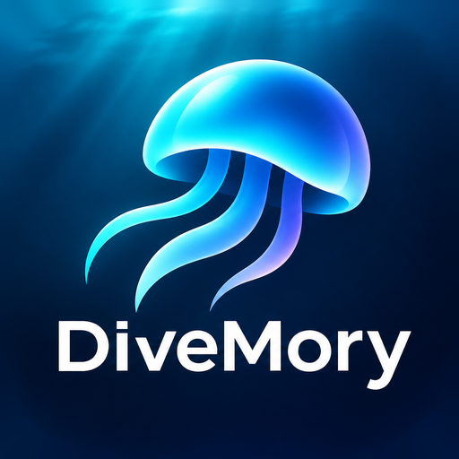
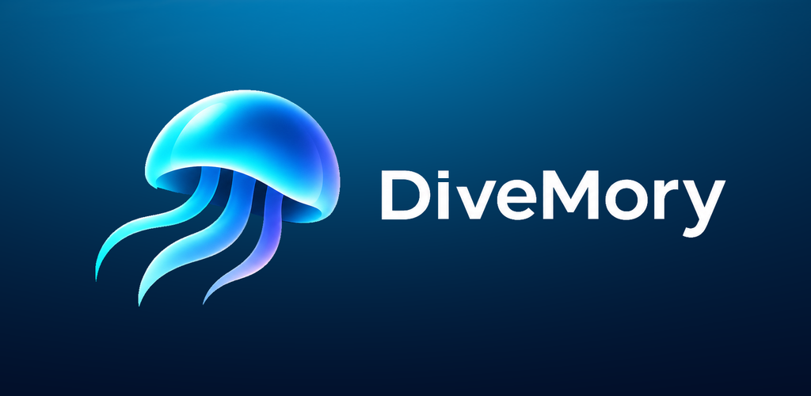

다이버를 위한 해양생물 도감 · 사진 퀴즈
Android 출시 준비 중
DiveMory는 스쿠버 다이버가 바다에서 만나는 생물을 사진으로 익히는 앱입니다. 다이빙을 떠나기 전에 그 지역에서 볼 수 있는 생물을 미리 공부하고, 다녀온 뒤에는 본 생물을 기록합니다.
해양생물 약 300항목을 사진, 이름, 구별 특징과 함께 봅니다. 인터넷 없이도 볼 수 있습니다.
사진을 보고 이름을 맞히며 익힙니다. 틀린 생물은 다시 나와 복습됩니다.
시밀란, 제주, 아닐라오, 코모도 등 다이빙 지역을 골라 그 지역 생물만 공부합니다.
다이빙에서 본 생물을 날짜·장소와 함께 기록합니다. 기록은 내 기기에 저장됩니다.
친구와 랭킹전 점수를 겨룹니다. 서로 수락한 친구끼리만 순위가 보입니다.
도감에서 틀린 사진이나 설명을 발견하면 바로 알릴 수 있습니다.
도감의 사진은 직접 촬영한 사진과, 상업적 이용이 허용된 공개 라이선스 사진을 사용합니다. 각 사진의 저작자와 라이선스는 앱 안에 표시합니다.